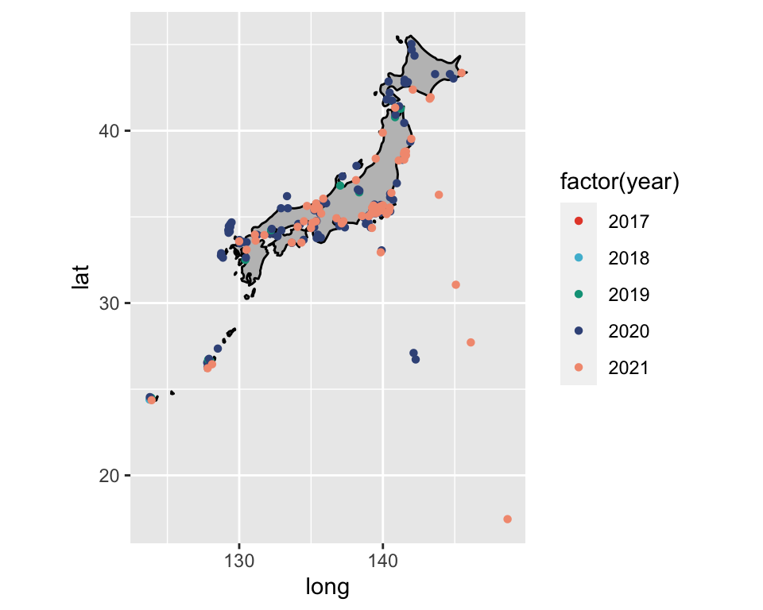
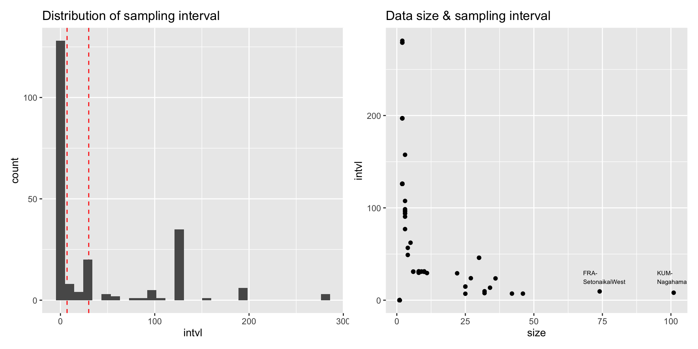
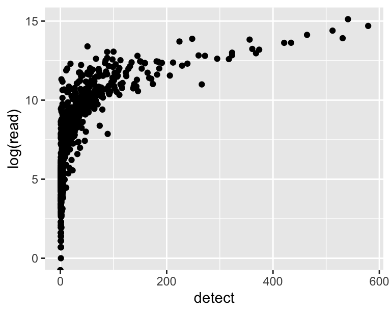

RStudio等を起動する
各自PCのローカルに’anemone’というフォルダ(ディレクトリ)を作成
Dropboxのリンクから’ANEMONE DATA’をDLする
’ANEMONE DATA’には3(+ 3)種類のデータが含まれている
(データはcsv/rds形式で提供)
Species_matrix：種レベル解像度の群集データ（リード数）
Genus_matrix：属レベルの群集データ
Meta_table：各サンプルの時空間情報
Community_data：ANEMONE DBの生データ
Meta_data：ANEMONE DBの生メタデータ
Name_table：各サンプルの調査プロジェクトとシーケンスラン情報
現在ANEMONE
DBで公開済みのものを整形したデータ
(by 笠田さん)
基本的に2019/01/10–2021/08/31までのデータ
有効サンプル数 = 978 (同じ地点の別日を含む)
海川湖の区別なし
同じ地点で水深のみが違うものあり
(例：KUM-Otomi-Surface/Bottom)
緯度経度は本当の採集位置が属する二次メッシュの中心点
(希少種等への配慮のため)
データを読み込む
## # A tibble: 978 × 933
## samplename `Ablennes hians` `Dictyosoma burgeri` Dictyosoma rubrimacu…¹
## <chr> <dbl> <dbl> <dbl>
## 1 20171218T0103-K… 1 256 715
## 2 20171218T0240-K… 0 0 0
## 3 20180123T0030-K… 0 579 0
## 4 20180123T0135-K… 0 0 0
## 5 20180314T0045-K… 0 415 0
## 6 20180314T0200-K… 0 149 0
## 7 20180427T0040-K… 0 253 0
## 8 20180427T0205-K… 0 0 0
## 9 20180902T0105-K… 0 3344 0
## 10 20180902T0220-K… 0 262 0
## # ℹ 968 more rows
## # ℹ abbreviated name: ¹`Dictyosoma rubrimaculatum`
## # ℹ 929 more variables: `Engraulis japonicus` <dbl>,
## # `Enneapterygius etheostomus` <dbl>, `Entomacrodus stellifer` <dbl>,
## # `Epinephelus akaara` <dbl>, `Ernogrammus hexagrammus` <dbl>,
## # `Girella punctata` <dbl>, `Halichoeres tenuispinis` <dbl>,
## # `Hypoatherina tsurugae` <dbl>, `Istigobius campbelli` <dbl>, …データの地理分布を見てみる
map_data("world") |> filter(region == "Japan") |> ggplot(aes(x = long, y = lat)) +
geom_polygon(aes(group = group), fill = "grey75", color = "black") +
geom_point(data = meta |> distinct(year, lat, lon) |> rename(long = lon), aes(color = factor(year)))
## # A tibble: 5 × 2
## year n
## <dbl> <int>
## 1 2017 2
## 2 2018 11
## 3 2019 157
## 4 2020 698
## 5 2021 126## # A tibble: 218 × 2
## site n
## <chr> <int>
## 1 KUM-Nagahama 101
## 2 FRA-SetonaikaiWest 74
## 3 AKU-Hiai 46
## 4 AMS-Asamushi 42
## 5 RUI-Iriomote 36
## 6 SZW-Takihama 34
## 7 AKS-AkkeshiRinkai 32
## 8 KNG-SagamigawaKushikawa 32
## 9 KUM-Otomi-Bottom 30
## 10 KUM-Otomi-Surface 30
## # ℹ 208 more rows# 各サンプルのデータサイズ・サンプル間隔を調べる
tbl <- foreach(s = distinct(meta2, site)$site, .combine = bind_rows) %do% {
tmp <- meta2 |> filter(site == s) |> arrange(date)
if(nrow(tmp) == 1) {
tibble(site = s, size = 1, intvl = 0)
} else {
d <- tmp |> pull(date) |> as.numeric()
tibble(site = s, size = nrow(tmp), intvl = mean(lead(d) - d, na.rm = TRUE))
}
}
div_ts <- smat |>
filter(str_detect(samplename, "KUM-Nagahama$") | str_detect(samplename, "FRA-SetonaikaiWest$")) |>
pivot_longer(!samplename, names_to = "Species", values_to = "read") |> group_by(samplename) |>
reframe(Order = str_c("D", 0:2), hillD = as.numeric(vegan::renyi(read, scale = 0:2))) |>
ungroup() |> pivot_wider(names_from = Order, values_from = hillD)
div_ts## # A tibble: 175 × 4
## samplename D0 D1 D2
## <chr> <dbl> <dbl> <dbl>
## 1 20190106T2350-FRA-SetonaikaiWest 2.71 1.95 1.39
## 2 20190110T0110-KUM-Nagahama 3.40 1.95 1.53
## 3 20190114T2345-FRA-SetonaikaiWest 3.04 2.27 1.87
## 4 20190120T2349-FRA-SetonaikaiWest 3.40 2.42 1.98
## 5 20190128T2345-FRA-SetonaikaiWest 2.30 1.81 1.38
## 6 20190204T0115-KUM-Nagahama 3.50 2.44 2.08
## 7 20190204T2344-FRA-SetonaikaiWest 2.77 2.01 1.66
## 8 20190207T0100-KUM-Nagahama 3.26 1.82 1.22
## 9 20190211T2341-FRA-SetonaikaiWest 3.71 2.03 1.41
## 10 20190217T2345-FRA-SetonaikaiWest 2.77 1.73 1.50
## # ℹ 165 more rows# 最頻種を調べてみる
(tmp0 <- smat |> mutate(across(!samplename, \(x) if_else(x != 0, 1, 0))) |> summarize(across(!samplename, sum)) |>
pivot_longer(everything(), names_to = "Species", values_to = "detect") |> arrange(desc(detect)))## # A tibble: 932 × 2
## Species detect
## <chr> <dbl>
## 1 unidentified Acanthopagrus 579
## 2 Takifugu alboplumbeus 541
## 3 Mugil cephalus 531
## 4 Engraulis japonicus 512
## 5 Parablennius yatabei 464
## 6 unidentified Sebastes 434
## 7 unidentified Takifugu 421
## 8 Girella punctata 374
## 9 Dictyosoma burgeri 368
## 10 unidentified Ditrema 361
## # ℹ 922 more rows# リード数が多い種を調べてみる
tmp1 <- smat |> summarize(across(!samplename, sum)) |>
pivot_longer(everything(), names_to = "Species", values_to = "read") |> arrange(desc(read))
tmp1 |> head(5)## # A tibble: 5 × 2
## Species read
## <chr> <dbl>
## 1 Takifugu alboplumbeus 3685179
## 2 unidentified Acanthopagrus 2408316
## 3 Engraulis japonicus 1788189
## 4 Parablennius yatabei 1366900
## 5 Mugil cephalus 1107358
多種・多様な地点を含むデータセット
スナップショットデータ
-> 地点数多・地理的分布の解析
高頻度観測データ
-> 地点数少・時間変動の解析
生物量・メタデータを連結して解析
(e.g., Species_matrix + Meta_table)